On-Device UI
Tap tiles to control devices, open folders, or view details. Configure the layout in the Web Admin.
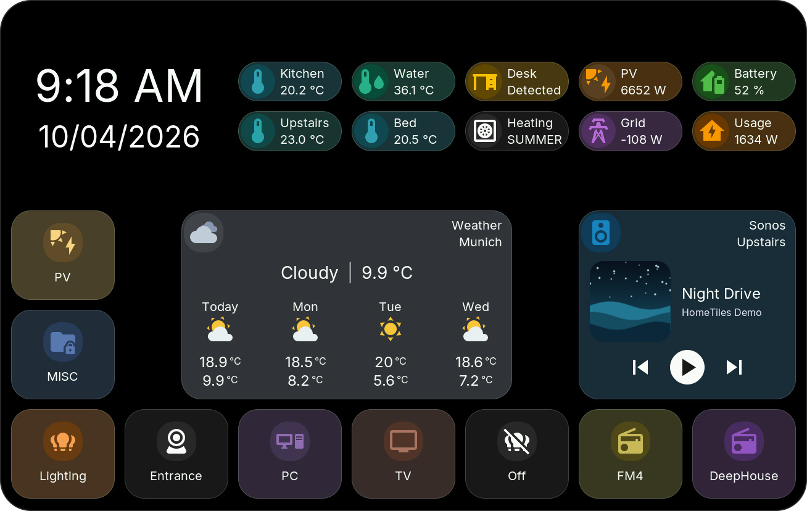
Every icon sits on a round circle, and a tile can take on its icon's color. Tiles and circles use the same corner radius, and half-height tiles show their title and value next to the icon. Colors, circles, and radius are set in the Web Admin; rules can color a tile by the state of an entity. Every tile type and its popup is shown under Tile Types.
Folders
Folders have their own grid. The back tile returns to the previous page.
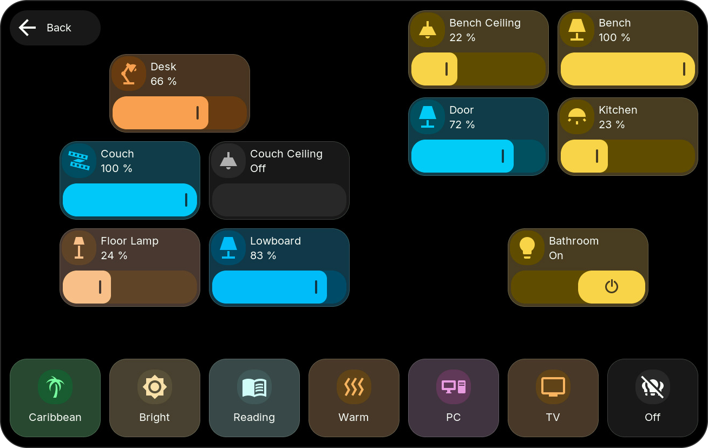
A protected folder asks for its PIN first; see Folder.
Popups
For tiles with detail controls, choose a tap or long press as the popup trigger in the Web Admin. Popups take on the look of their tile: the header shows the tile's icon and circle, and most popups use the tile's color.
History popups have 7D and 24H views (Energy: 7D and Today); the previous data stays visible until the new period arrives. To read an earlier value, touch a graph and move your finger along it, or tap an Energy bar. The time and value appear above the graph, and the marker stays where you let go.
Each type's popup is shown with its tile:
| Tile | Popup |
|---|---|
| Sensor, Binary Sensor | History graph or state timeline with Activity |
| Number, Select, Date/Time | Control above the history |
| Energy | Hourly and daily bars |
| Switch | Brightness, color, and color temperature for lights; on/off otherwise |
| Cover | Position and tilt |
| Weather, Media, Climate | Forecast, playback, temperature and modes |
| Camera | Live video |
Home Assistant can also open a folder or popup using the display's View Select entity.
Built-in Camera Indicator
While Home Assistant uses the display's own built-in camera, a red line runs along the top edge and a Camera active pill appears below it. Tap the pill to end the live stream; the camera stays available for the next request. Both parts can be switched off in the Web Admin.
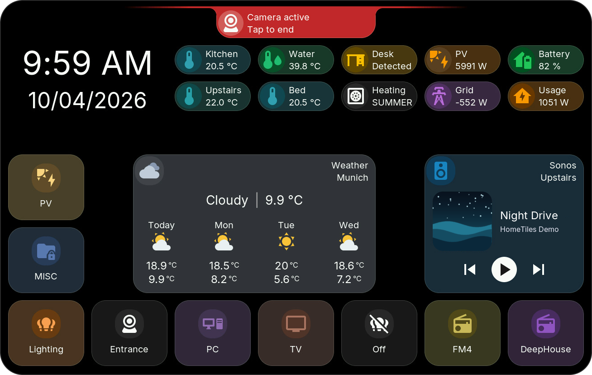
Settings
The gear tile opens Settings.
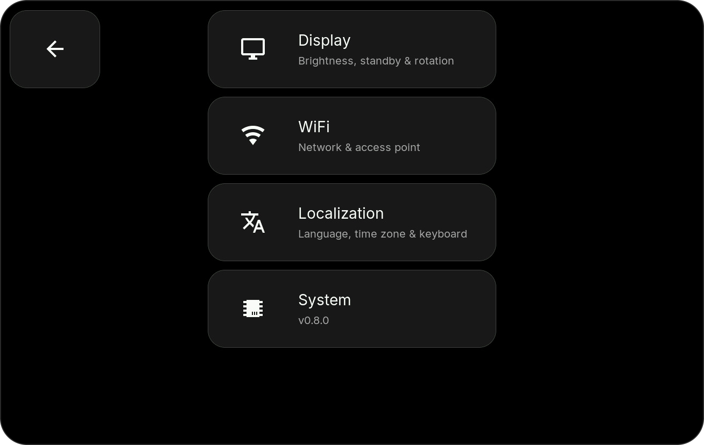
If Settings is PIN-protected, enter the PIN to open it. If its tile is hidden, swipe inward from the configured screen edge; the swipe also works while the tile is visible. The factory PIN 466384537 also unlocks protected folders; see Settings access.
Display
Adjust brightness, sleep timeout, screensaver timeout, and screensaver brightness. Never disables the corresponding timeout. The rotate button turns the UI by 180°.
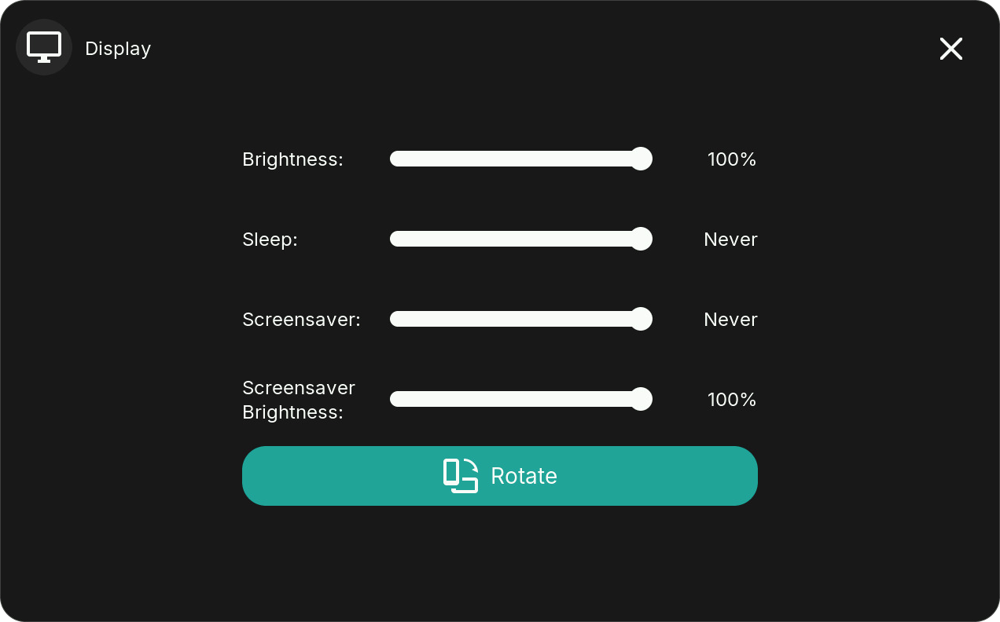
Tap a Clock tile to open the screensaver immediately. See Screensaver for its layout and images.
WiFi
Select a network and enter its password. The connected network is checked, and its IP address opens the Web Admin.
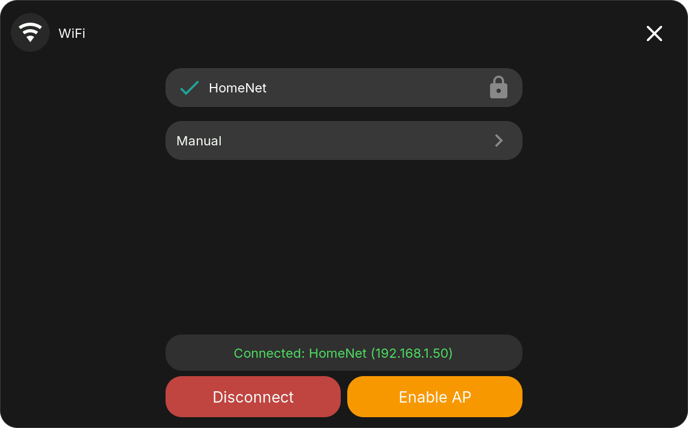
- Disconnect: stay offline until you reconnect or restart; saved credentials remain.
- Enable AP: connect through the display's hotspot and setup portal.
- Manual: enter the SSID and password with the on-screen keyboard.
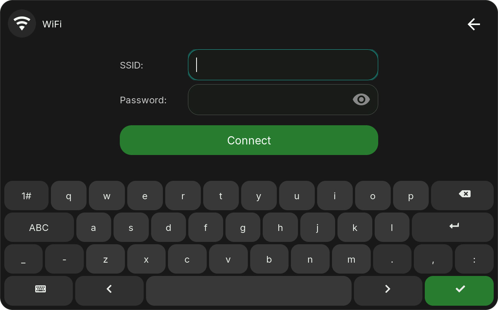
Localization
Choose English, German, French, or Polish, time zone, date/time formats, and keyboard layout. Tile titles also support Cyrillic characters.
The keyboard follows the language when set to Auto: German uses QWERTZ with ä, ö, ü, and ß; French uses AZERTY; Polish and English use QWERTY. In French and Polish, the keyboard key at the bottom left switches to their letters: the Polish letters on their AltGr keys (ą on a, ł on l, ż on z, and so on), the French accents à, â, é, è, ê, ë, î, ï, ô, ç, œ, ù, û, ü, and ÿ. Press it again to return; a highlighted key shows that the letters are active.
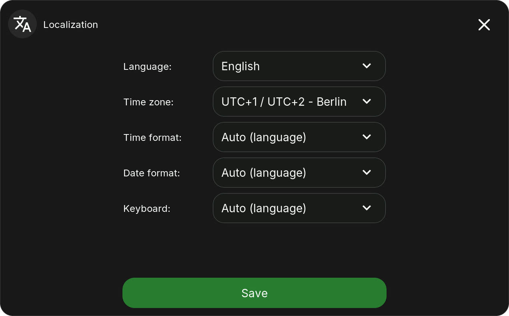
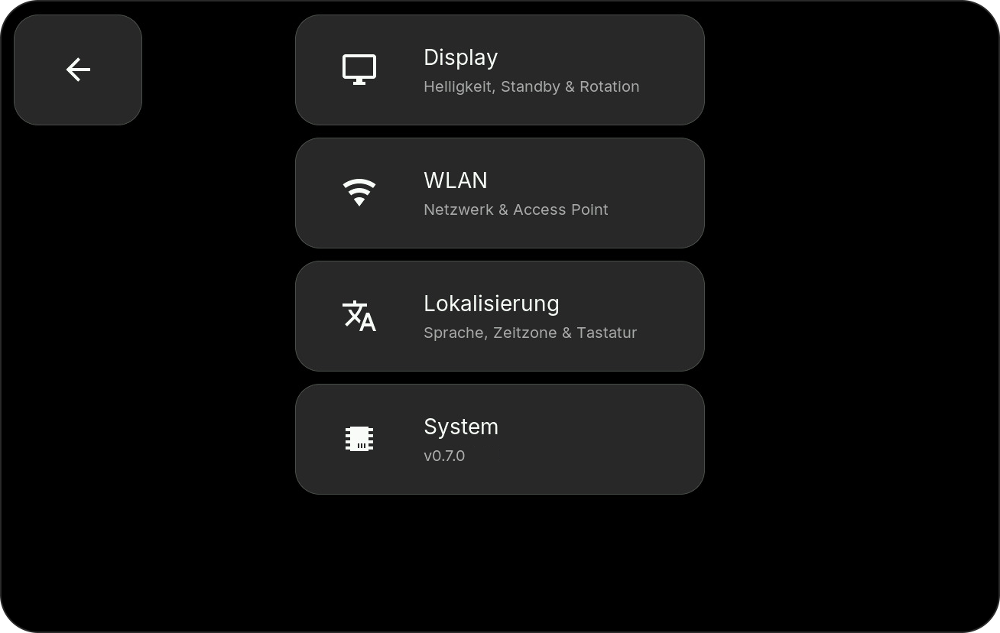
System
View the firmware version and device name, or use the maintenance actions:
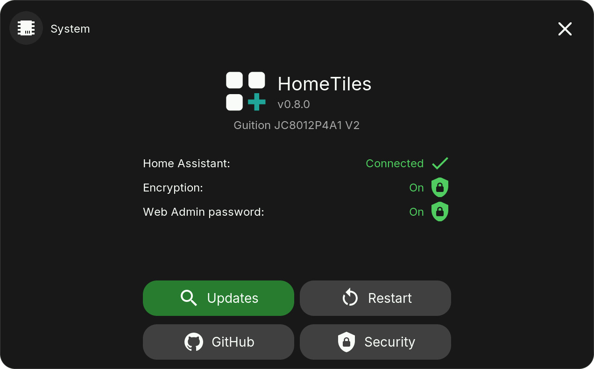
- Updates: find and install a new release; see Firmware Updates.
- Restart: reboot the display.
- GitHub: show a QR code for the project.
- Security: encrypted Bridge commands and the Web Admin password. Encrypt sets up encryption with Home Assistant by a six-digit number, Turn off switches it off on both sides, and Password removes a forgotten Web Admin password. Both ask before they act.
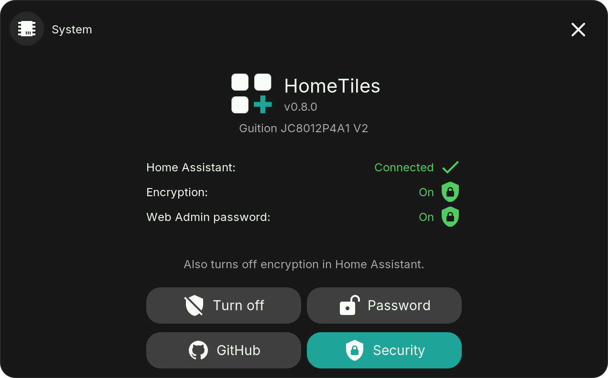
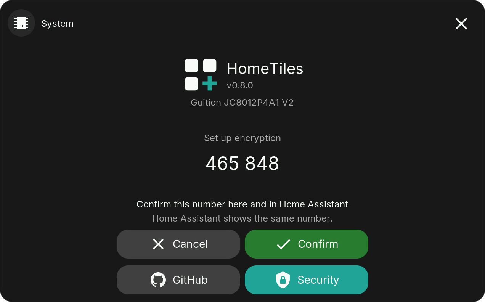
Below the version and device name, System shows three rows: Home Assistant with a check while the display is connected, and Encryption and Web Admin password with a green shield while they are on. GitHub and Security are colored while their view is open; tap them again to return.
The Settings tiles, the Back button and the Settings popups use the tile color from the global settings.